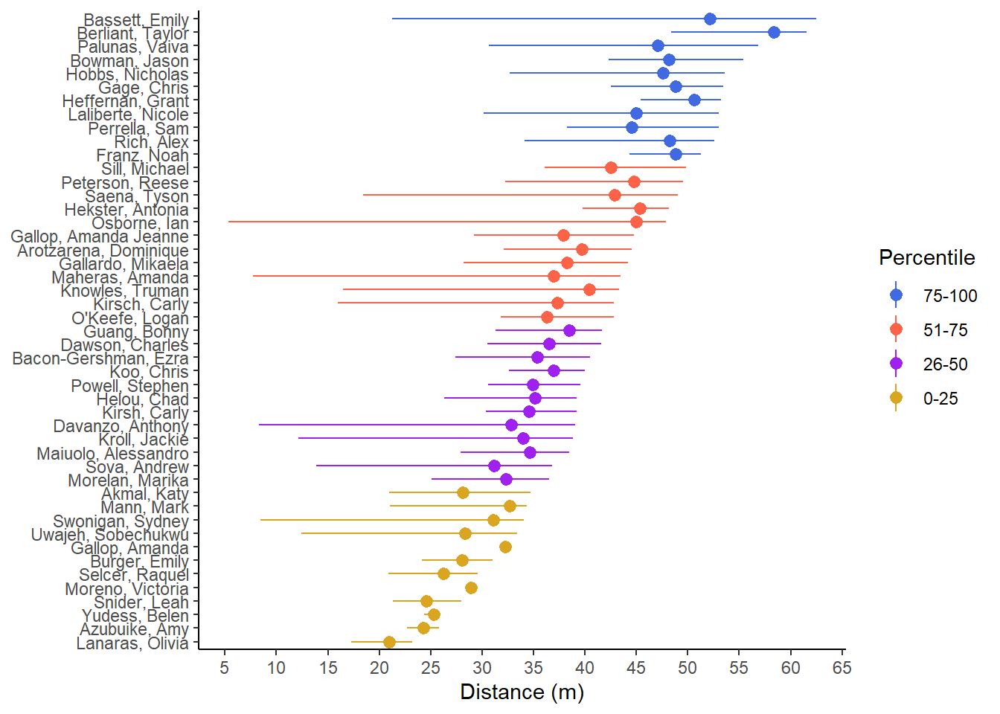

source(here::here("r", "my_functions.R"))
source("https://raw.githubusercontent.com/slicesofdata/dataviz23/main/R/functions/describe.R")Defining describe.RDone Defining describe.RThis page is a work in progress and may contain areas that need more detail or that required syntactical, grammatical, and typographical changes. If you find some part requiring some editing, please let me know so I can fix it for you.
The main workhorse of all plots is the theme. Up until now, we have not addresses much with the theme() function. However, ll of the elements that we have created for the plot represent components of the theme. The font, the lines, the colors, the grid, the legend, the text, the background, and so forth. All of these are theme component and all can be changed. This module will address some theme details but will not address how to modify them all.
Reading should take place in two parts:
Before Class: First, read to familiarize yourself with the concepts rather than master them. Understand why one would want to visualize data in a particular way and also understand some of the functionality of {ggplot2}. I will assume that you attend class with some level of basic understanding of concepts.
Class: In class, some functions and concepts will be introduced and we will practice implementing {ggplot2} code. On occasion, there will be an assessment involving code identification, correction, explanation, etc. of concepts addressed in previous modules and perhaps some conceptual elements from this week’s readings.
After Class: After having some hands-on experience with coding in class, homework assignments will involve writing your own code to address some problem. These problems will be more complex, will involving problem solving, and may be open ended. This is where the second pass at reading with come in for you to reference when writing your code. The module content presented below is designed to offer you some assistance working through various coding problems but may not always suffice as a replacement for the readings from Wickham, Navarro, & Pedersen (under revision). ggplot2: Elegant Graphics for Data Analysis (3e).
Provided in class:
view_html(): for viewing data frames in html format, from /r/my_functions.R
You can use this in your own work space but I am having a challenge rendering this of the website, so I’ll default to print() on occasion.
source(here::here("r", "my_functions.R"))
source("https://raw.githubusercontent.com/slicesofdata/dataviz23/main/R/functions/describe.R")Defining describe.RDone Defining describe.Rlibrary(dplyr)
Attaching package: 'dplyr'The following objects are masked from 'package:stats':
filter, lagThe following objects are masked from 'package:base':
intersect, setdiff, setequal, unionlibrary(magrittr)
library(ggplot2)
library(geomtextpath)There are several simple functions as your fingertips for changing the theme.
theme_gray(): Gray background color and white grid linestheme_bw(): White background and gray grid linetheme_minimal(): A minimal theme containing no background annotationstheme_classic(): A classic theme, with x and y axis lines; no grid lines.theme_linedraw(): A theme with black lines of various widths on white backgrounds, reminiscent of a line drawings.theme_light(): A theme similar to theme_linedraw() but with light grey lines and axes, to direct more attention towards the datasee::theme_modern(): a modern looking themetheme_dark(): Same as theme_light but with a dark background.theme_void(): a completely empty theme, useful for plots with non-standard coordinates or for drawings.cowplot::theme_minimal_grid(): both vertical and horizontal grid linescowplot::theme_minimal_hgrid(): horizontal grid linescowplot::theme_minimal_vgrid(): vertical grid linesAnd there are more in {ggthemes}, {ggthemr}, or other libraries.
cowplot::theme_minimal_vgrid()plot + cowplot::theme_minimal_vgrid()
theme_classic()plot + theme_classic()
theme_minimal()plot + theme_minimal()see::theme_modern()plot + see::theme_modern()This is a beast of a function, it all its glory. Look at all you can change!
theme(
line,
rect,
text,
title,
aspect.ratio,
axis.title,
axis.title.x,
axis.title.x.top,
axis.title.x.bottom,
axis.title.y,
axis.title.y.left,
axis.title.y.right,
axis.text,
axis.text.x,
axis.text.x.top,
axis.text.x.bottom,
axis.text.y,
axis.text.y.left,
axis.text.y.right,
axis.ticks,
axis.ticks.x,
axis.ticks.x.top,
axis.ticks.x.bottom,
axis.ticks.y,
axis.ticks.y.left,
axis.ticks.y.right,
axis.ticks.length,
axis.ticks.length.x,
axis.ticks.length.x.top,
axis.ticks.length.x.bottom,
axis.ticks.length.y,
axis.ticks.length.y.left,
axis.ticks.length.y.right,
axis.line,
axis.line.x,
axis.line.x.top,
axis.line.x.bottom,
axis.line.y,
axis.line.y.left,
axis.line.y.right,
legend.background,
legend.margin,
legend.spacing,
legend.spacing.x,
legend.spacing.y,
legend.key,
legend.key.size,
legend.key.height,
legend.key.width,
legend.text,
legend.text.align,
legend.title,
legend.title.align,
legend.position,
legend.direction,
legend.justification,
legend.box,
legend.box.just,
legend.box.margin,
legend.box.background,
legend.box.spacing,
panel.background,
panel.border,
panel.spacing,
panel.spacing.x,
panel.spacing.y,
panel.grid,
panel.grid.major,
panel.grid.minor,
panel.grid.major.x,
panel.grid.major.y,
panel.grid.minor.x,
panel.grid.minor.y,
panel.ontop,
plot.background,
plot.title,
plot.title.position,
plot.subtitle,
plot.caption,
plot.caption.position,
plot.tag,
plot.tag.position,
plot.margin,
strip.background,
strip.background.x,
strip.background.y,
strip.clip,
strip.placement,
strip.text,
strip.text.x,
strip.text.x.bottom,
strip.text.x.top,
strip.text.y,
strip.text.y.left,
strip.text.y.right,
strip.switch.pad.grid,
strip.switch.pad.wrap,
...,
complete = FALSE,
validate = TRUE
)Adding theme() layers to plots can be tedious. Ensuring all plots follow the same theme may be a nightmare. Although you can modify the plot theme by adding it as a layer, doing so may be redundant when you do not wish to accept the default theme. Rather that add a theme_*() layer to your plot using theme_minimal(), theme_classic(), or some other theme, you could set the theme at the top of your code file using theme_set(). Then, all plots in the file will adhere to that theme unless you add a layer to change it.
To set the theme to theme_minimal(), pass the theme into theme_set(). A modern theme can be taken from the {see} library (e.g., see::theme_modern()). If set here, all plots after, and only after, setting the theme will abide by those theme characteristics. Setting themes can ensure consistency with all plots and reduce coding the theme for each plot.
theme_set()plottheme_set(theme_minimal())
plotHere is a great illustration was created by Henry Wang. You can find more examples and a walk-through here.
knitr::include_graphics(here::here("images", "theme_elements.png"))
theme(get)If you want to see how the current active theme components are set, use theme_get(). This default theme is theme_grey(). Whenever you restart R, this default theme will load. You can load a different theme but you will need to add code to do this so that you ensure the same operation once R reloads.
the_theme <- theme_get()Assigning the theme to an object, we can see the components as elements of the names() vector. We will not print all of the components of the theme here because there are 97 of them.
You can see the 97 theme components by passing the theme object to names(). You can see there are far many more than what Wang provided in his illustration. You can, however, see the first 10 using names(the_theme)[1:10].
names(the_theme)[1:10] [1] "line" "rect" "text"
[4] "title" "aspect.ratio" "axis.title"
[7] "axis.title.x" "axis.title.x.top" "axis.title.x.bottom"
[10] "axis.title.y" To set new theme components use theme_set(). Modifying a theme is not too difficult. You will need to remember that changes to a theme will need to be loaded at the top of your R Markdown file so that the theme is applied to all plots. If you are working with collaborators, consider putting your theme in file names something like /r/theme.R (or add it to a library call file). Then, source the code where you load libraries. All team members can source the same file and modifications to the theme will occur everywhere.
Modify the default theme using theme_set() and passing it a theme object. You can add a new layer to plots but calling the theme when you load your libraries is likely a more foolproof approach.
In this example, r/theme.R defines two new themes. theme_classic_167() is based on theme_classic() and theme_minimal_167() is based on theme_minimal(). Both functions can take two arguments for adjusting the base font size and family (font type). You should try to set the font family to match the font of your document or website within which your visualization will appear.
base_size = 14base_family = "Book Antiqua"As part of the function, you will also see the addition of the ... argument in the third position. This special argument indicates a variable number of arguments to pass to other functions. Use the ... argument when you want to extend a function without being so verbose that you list the exhaustive list of arguments in your function. Besides, even if you do list them all by name, their names may change or new arguments will be added to other function, thus causing your function (which relies upon the other function) to break.
You will add ... in two places, which you will see in r/theme.R, ... appears:
function(base_size = 14, base_family = "Book Antiqua", ...)ggplot2::theme(<other arguments>, ...)Load the new theme function.
source(here::here("r", "theme.R"))theme_167_classic()plot + theme_167_classic()Warning in grid.Call(C_stringMetric, as.graphicsAnnot(x$label)): font family
not found in Windows font database
Warning in grid.Call(C_stringMetric, as.graphicsAnnot(x$label)): font family
not found in Windows font databaseWarning in grid.Call(C_textBounds, as.graphicsAnnot(x$label), x$x, x$y, : font
family not found in Windows font database
Warning in grid.Call(C_textBounds, as.graphicsAnnot(x$label), x$x, x$y, : font
family not found in Windows font database
Warning in grid.Call(C_textBounds, as.graphicsAnnot(x$label), x$x, x$y, : font
family not found in Windows font database
Warning in grid.Call(C_textBounds, as.graphicsAnnot(x$label), x$x, x$y, : font
family not found in Windows font database
Warning in grid.Call(C_textBounds, as.graphicsAnnot(x$label), x$x, x$y, : font
family not found in Windows font database
Warning in grid.Call(C_textBounds, as.graphicsAnnot(x$label), x$x, x$y, : font
family not found in Windows font database
Warning in grid.Call(C_textBounds, as.graphicsAnnot(x$label), x$x, x$y, : font
family not found in Windows font database
Warning in grid.Call(C_textBounds, as.graphicsAnnot(x$label), x$x, x$y, : font
family not found in Windows font databasetheme_167_minimal()plot + theme_167_minimal()Warning in grid.Call(C_stringMetric, as.graphicsAnnot(x$label)): font family
not found in Windows font database
Warning in grid.Call(C_stringMetric, as.graphicsAnnot(x$label)): font family
not found in Windows font databaseWarning in grid.Call(C_textBounds, as.graphicsAnnot(x$label), x$x, x$y, : font
family not found in Windows font database
Warning in grid.Call(C_textBounds, as.graphicsAnnot(x$label), x$x, x$y, : font
family not found in Windows font database
Warning in grid.Call(C_textBounds, as.graphicsAnnot(x$label), x$x, x$y, : font
family not found in Windows font database
Warning in grid.Call(C_textBounds, as.graphicsAnnot(x$label), x$x, x$y, : font
family not found in Windows font database
Warning in grid.Call(C_textBounds, as.graphicsAnnot(x$label), x$x, x$y, : font
family not found in Windows font database
Warning in grid.Call(C_textBounds, as.graphicsAnnot(x$label), x$x, x$y, : font
family not found in Windows font database
Warning in grid.Call(C_textBounds, as.graphicsAnnot(x$label), x$x, x$y, : font
family not found in Windows font database
Warning in grid.Call(C_textBounds, as.graphicsAnnot(x$label), x$x, x$y, : font
family not found in Windows font database